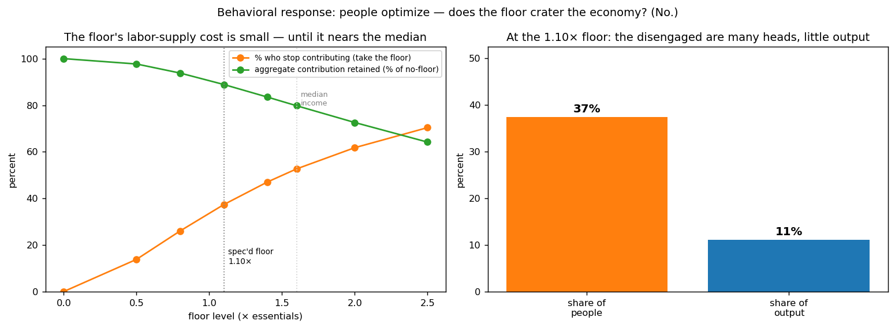

In plain language
Companion to RESULTS - Behavioral Response. Companion added July 11, 2026 — the v1–v5-era runs predate the plain-language convention; written from the committed RESULTS as it stands today (including any verification-pass corrections already applied in that file), with no reinterpretation.
The question
Every earlier model assumed people behave by fixed rules. This one lets them optimize, and aims at the sharpest objection to a guaranteed floor: if anyone can always earn the cost of essentials, why would anyone work harder? Every agent chooses between contributing for market income and taking the floor (~1.10× essentials for the network's verified work, at lower effort) — whichever leaves them better off.
What we found
The floor does not crater the economy. At the spec'd 1.10× level, about 37% of people rationally choose floor-work — but because output is concentrated in high-productivity contributors who earn far above the floor and keep working, those 37% carried only 11% of total output. Roughly 89% of aggregate contribution is retained: many heads, little output. The cost scales with generosity, though: push the floor toward or past the median income and a majority disengage and a fifth to a third of output disappears (80% retained at 1.6×, 64% at 2.5×). The design lesson — which the spec already follows — is to keep the floor near subsistence. A floor is a safety net, not a salary.
Two corrections, on the record
The July 2026 verification added an addendum (the code and JSON were always right; the write-up wasn't). First, the write-up omitted a cost column: gross floor payments are 19.3% of output at the 1.10× floor — a figure irreconcilable with the main model's "self-funded at ≤2.2% of issuance" until EVE Sim v4 - Integrated Behavioral Funding resolved it (the two sit on one cost curve; self-funding holds when essentials cost below ~0.5× median income and breaks above it). The original claim that "the v1–v3 results are robust to behavioral response" was overreach — v4 is the model that actually closes that loop, and it motivates changing the floor from an unconditional top-up to an EITC-style taper (same guarantee, about half the output loss at high essentials ratios). Second, "the incentive to farm addictive content collapses" was wrong by the model's own arithmetic: the 0.4 effort weight leaves addictive content paying 1.2× active — attenuated ~2.5×, not collapsed. A rational farmer still farms it; the honest claim is attenuation plus the adversarial model's separate bounds.
The honest catch
Preferences are a standard simplification with no income effect on labor; the choice is single and static (no careers or learning); the effort premium and productivity distribution are calibrated, not estimated; and the model leaves out the non-monetary pull of creative work, which would reduce disengagement. The 37% headcount is the most calibration-sensitive number — the robust finding is the shape: many heads, little output, and a cost that rises sharply only as the floor nears the median.
One line
Letting people optimize doesn't sink the floor — at 1.10× essentials about 37% take it but ~89% of output survives — yet the verification pass cut this run down to size: its gross cost (19.3% of output) had been omitted, its "robust to behavioral response" claim was overreach that Sim v4 had to close, and effort-weighting attenuates addictive-content farming rather than ending it.
Words used here (added July 18, 2026 — plain-language house rule; the text above is unchanged). Agent — a simulated person in the model, each making its own best choice. Floor — guaranteed pay for the network's verified work at ~1.10× the cost of essentials — a safety net anyone may take. Median — the middle income: half earn more, half less; trouble starts only as the floor approaches it. Effort weight — the multiplier that pays active engagement more than passive consumption; 0.4 here for addictive content. EITC-style taper — support that phases out gradually as you earn more (like the US Earned Income Tax Credit) instead of vanishing the moment you work — same guarantee, about half the output loss. Gross — the total paid out before netting anything against it; 19.3% is the raw bill. Issuance — newly created money; "≤2.2% of issuance" quotes the main model's floor cost as a share of new money. Income effect — the standard idea that simply being richer makes people work less; deliberately left out here. Calibrated, not estimated — dials set by hand to plausible values rather than measured from real-world data.
Figures

Technical results
Closes the deepest gap in the whole program: every earlier model assumed people behave by fixed rules. This one lets them optimize, and tests the sharpest worry about a guaranteed floor — "won't everyone just stop working?" Files in this folder.
⚠️ ADDENDUM (July 2026 verification) — the omitted cost column, and one corrected claim
Two corrections to the write-up below (the code and JSON were always right): (1) the JSON's floor_cost_vs_output_pct — gross floor payments = 19.3% of output at the spec'd 1.10x floor — was omitted from the table below, which quoted only the 11.1% lost-output figure. That 19.3% was irreconcilable with the ABM's "self-funded at <=2.2% of issuance" and is now resolved by EVE Sim v4 - Integrated Behavioral Funding: this model's essentials ratio (~0.7x median income) and the ABM's (~0.15x) sit on one cost curve; self-funding holds below ~0.5x median and breaks above it. The claim "the v1-v3 results are robust to behavioral response" was overreach — v4 is the model that actually closes that loop, and it motivates changing the floor design from unconditional top-up to an EITC-style taper (same guarantee, ~half the output loss at high essentials ratios). (2) "the incentive to farm [addictive content] collapses" — by this model's own arithmetic the 0.4 weight leaves addictive content paying 1.2x active (attenuated ~2.5x, not collapsed). A rational farmer still farms it; the honest claim is attenuation plus the adversarial model's separate bounds.
The worry, and the answer
The economist's objection (the Lucas critique) is that behavior changes when the rules change — and the floor's version is blunt: if anyone can always earn the cost of essentials, why would anyone work harder? This model gives every agent a real choice between contributing (earning their market income, at the effort it costs) and taking the floor (earning ~1.10× essentials doing the network's verified work, at lower effort). They pick whichever leaves them better off.
The answer: the floor does not crater the economy — it sorts the low-productivity tail into steady work while the productive keep contributing. At the spec'd 1.10× floor, about 37% of people rationally choose floor-work over uncertain creative contribution — but because output is heavily concentrated in high-productivity contributors (who earn far above the floor and keep working), those 37% were only 11% of total output. So ~89% of aggregate contribution is retained. Many heads, little output.
Why it holds: output is concentrated, the floor is modest
Two facts do the work. First, productivity is lognormal — most of the economy's output comes from the upper tail, so pulling the low-productivity bottom out of creative work removes a lot of people but little production. Second, the floor is modest (just above essentials, well below the 1.6× median income), so anyone meaningfully productive earns multiples of it and has every reason to keep contributing.
The design lesson: keep the floor below the median
The labor-supply cost is real and it scales with the floor's generosity:
| Floor level (× essentials) | % who take the floor | Aggregate contribution retained |
|---|---|---|
| 0.5× | 14% | 98% |
| 0.8× | 26% | 94% |
| 1.10× (spec'd) | 37% | 89% |
| 1.4× | 47% | 84% |
| 1.6× (≈ median income) | 53% | 80% |
| 2.0× | 62% | 73% |
| 2.5× | 70% | 64% |
While the floor sits below the median, its cost in lost output is mild (single-digit-to-low-teens percent). Push it toward or past the median and a majority disengage and a fifth-to-a-third of output disappears. The clear lesson — and the spec already follows it — is to keep the floor near subsistence (1.10×), not near the median. A floor is a safety net, not a salary.
A bonus: people optimizing is what makes the anti-gaming rules work
The same "people respond to incentives" logic that creates the labor-supply worry is exactly what makes EDEN's effort-weighting succeed. Addictive/passive content has ~3× the raw appeal of active content, so without the effort-weight it would pay 3× as much and rational creators would flood it. With the 0.4 passive weight, addictive content pays only 1.2× active — so the incentive to farm it collapses. The behavioral response to the effort-weight is the intended one: agents shift toward genuinely valuable active contribution. The rule works because people optimize, not in spite of it.
What this validates
The v1–v3 results — floor holds, economy funded, prices stable — are robust to behavioral response, provided the floor stays modest. The one substantive addition is a quantified design constraint that the spec already respects: the floor's labor-supply cost is small at 1.10× essentials and grows steeply as the floor approaches the median, so the floor must be set near subsistence. Endogenous behavior doesn't break the design; it bounds one parameter.
Honest limits
GHH-style preferences (so there's no income effect on labor — a standard simplification); a single static choice (no career dynamics, learning-by-doing, or lifecycle); and the effort-premium of productive vs floor work, plus the productivity distribution, are calibrated, not estimated. It also leaves out the non-monetary pull of creative work and status (which would reduce disengagement) and the possibility that floor-work is itself fulfilling. The headline headcount (37%) is the most calibration-sensitive number; the robust findings are the shape — many heads but little output, and a cost that rises sharply only as the floor nears the median. Audience: economists and skeptics who lead with the work-incentive objection.
Files
behavioral_sim.py— the participation model, the floor-level sweep, and the effort-weight responsefig_behavioral.png— the floor-level tradeoff; heads-vs-output at the 1.10× floorresults_behavioral.json— all figures
Raw data